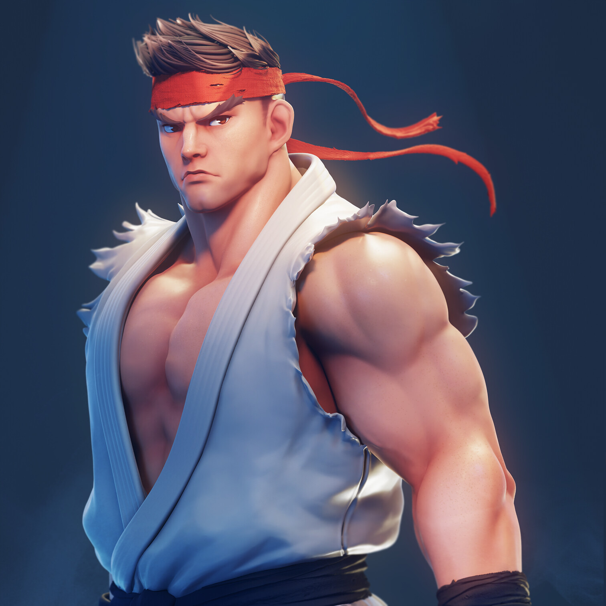

haz click aqui para ver contenido sobre entrenamiento de biceps
los biceps son un grupo muscular q crecen mas si los entrenas menos, es decir, entre 12 y 18 series por semana con un rir 2 o al fallo, estas bien
lo mejor para el crecimiento del bicep es q lo entrenes cuando estas trabajando jalones, pues ya va a estar bastante estimulado
imagenes de biceps
parrafo 1
que es rir 2
rir significa repeticiones en la recamara, basicamente son las repeticiones que te faltan para llegar al fallo muscular, que es ese punto en el que tus musculos no pueden ejecutar ni una rep mas
tu vieja
ejercicios para el biceps
- chin ups
- curl concentrado
- curl spider
- curl anillas
- hefestos
- curl declinado
flexores de codo
- hammer curl
- curl girando
- australianas con agarre cerrado
- curl inverso en barra